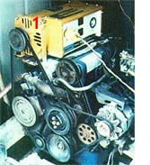
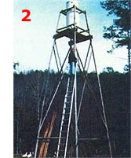

A little ingenuity: How B.J. Megnin does without public utilities!
How would you like to live free of power poles and light bills . . . yet still have electric lights, television, a water pump, and more for a total energy cost of around $15 a month? Well, impossible as it sounds, that's just what my family is doing!
My wife and I worked for several years and saved both our money and every single issue of MOTHER-in preparation for our move back to the land . . . which finally took place in September 1978.
We bought 120 acres in the very rough timber country of northeastern Alabama (maybe 20 of our acres are flat enough for cultivation) called Rocky Hollow. There are no springs or creeks for hydropower on our land . . . we seldom have enough breeze to run a windmill ... and we're more than a mile from the nearest power pole. But we've found that enjoying the luxury of electricity deep in the woods doesn't have to be a big problem at all!
Our home energy system began with the purchase of a 120-240 volt alternator (it's a Sears 4,000-watt model) and a used, 1976 Ford Pinto engine. Then, using a steel bracket, I mounted the alternator so it could be driven by the engine's fan belt (see Photo 1). The setup provides 120 and 240 volts AC whenever we need it, which is for a 15 minute period every other day . . . to run the well pump.
When the pump isn't in operation, we use the 12-volt DC that's produced by the engine. To do so, I simply replaced the Pinto's single small battery with four larger units in parallel and the auto's alternator keeps our battery bank fully charged.
Next, we ran underground cable (two conductor No. 10 wires) from the batteries in the "powerhouse" to the switchbox in our mobile home, and hooked it up as though it were 110 volts from a powerline. However, we first had to remove all! the light sockets in the house and replace them with 12-volt sockets (Stock No. 60F1308, Type 11-271), which we ordered from Newark Electronics (Dept. TMEN, 500 North Pulaski Road, Chicago, Illinois 60624). We then inserted 12-volt bulbs into the sockets (also from Newark Electronics, Stock No. 27F193, Type 1141). By placing a light over each critical area (the sink, stove, etc.), we can have nice, bright illumination ... whenever and wherever we need it.
Now perhaps you're thinking, "Fine they have 12-volt lights but what about television, stereo, etc.? Such amenities won't work on 12 volts."
Well, most of them won't, I'll grant you . . . but in this day of recreational vehicles and electronic wizardry, you can find 12-voli television sets--black and-white or color-very readily (Sears, Ward's, and Western Auto all sell them). The same is true of stereo systems. (We've found that a relatively inexpensive Datsun tape deck, with a couple of decent speakers, does just fine.)
Here's another example of how we put modernday electronic wizardry to work on our homestead: We bought (far $57) a new 200-watt inverter, a device that converts 12-volt DC into 120-volt AC . . . and anytime we need a small amount of the latter "juice" (such as for our electronic organ, small appliances, or whatever), we just turn on the inverter and plug into it.
Now let's get down to some of the dry statistics . . . which aren't boring to us a' all, because they involve what we paid and what we got! The Sears alternator cost less than $400 . . . the Pinto engine: $275 . . . the battery bank: $280 . . . and the wir ing, sockets, bulbs, and miscellaneous about $100. It all adds up to a grand total of just over $1,000 for our complete power system. (Notice that-if we didn't need a fairly large quantity of 240 volt AC power for the well pump we could get by without the $400 alternator.)
As mentioned above, we usually run the plant every other day. I start it, set the throttle to just above a fast idle (approximately 1,200 RPM) and let it run for an hour. During this period the car's alternator is putting about 35 amps of current into the battery bank. Then I throttle the engine up to 2,200 RPM, which is probably (I'm guessing) the equivalent of 35-40 MPH in a car ... and just the speed required to drive the big alternator at 3,600 RPM, to provide the approximately 15 minutes of the 60-cycle-per-second, 240 volts needed by our submersible well pump.
When I switch on the pump, the water goes into a 250-gallon storage tank atop a 30-foot tower (Photo 2). Within 10 to 20 minutes the tank is full, and I can turn the system off. During that short operating time, however, the car alternator runs at full capacity (about 60 amps) and charges the battery bank, if needed. (The auto voltage regulator takes care of all that.)
Better yet, during the whole hour-and-a-quarter period, the engine consumes less than a gallon of gasoline. Call it a dollar's worth of fuel 15 times monthly . . . or $15 a month!
Here's the best trick of all! Our Pinto power plant like all internal combustion engines produces some noise, a small amount of useful power, and a whale of a lot of heat. In fact, the warmth generated accounts for approximately 75% of the fuel's energy . . . and we manage to recover more than halt of what is generally wasted heat.
Instead of using a radiator on the engine, you see, we circulate the hot water through a well insulated, 500-gallon tank (it's an old butane container) that's enclosed in a weatherproof box. About 60 gallons of 180°F water go into the tank each time I run the engine. (That amounts to approximately 50,000 BTU, if you want to get technical about it.) A coil of copper tubing carries the water from the well through the heated water in the top of this tank, and then into the hot water distribution lines in our mobile home. Presto . . . steaming showers!
So there you have the Rocky Hollow Energy System. It's nothing new and nothing fancy . . . but it's here now, it's ours, and it works! We get power for heat, lights, warm water, television, stereo, the electronic organ, and even our blender . . . for $15 per month. Of course, we're not using as much electricity as we did during our "city" days . . . but we have all we need, and for our requirements the price of the Rocky Hollow Energy System can't be beat!
PHOTOS BY THE AUTHOR
|
 |
 |
|